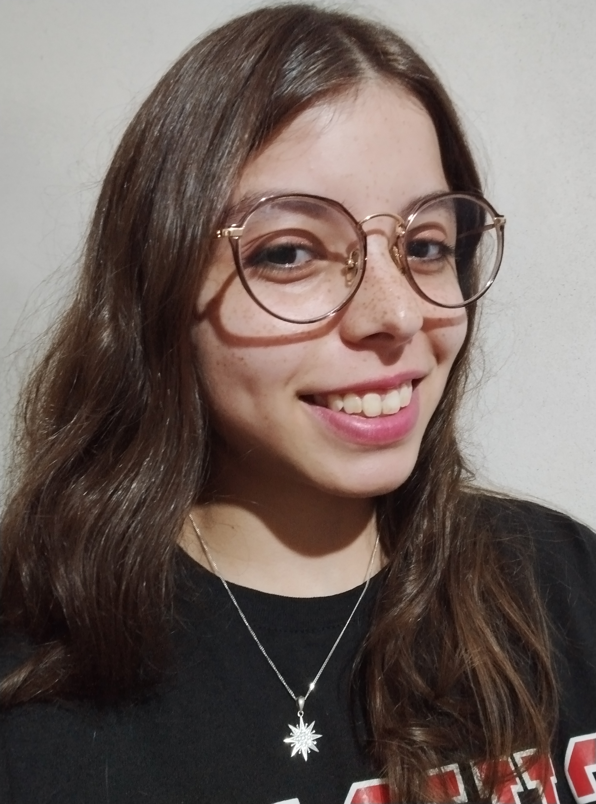

About me

Hello, I'm Cecilia Rava, a passionate individual with a lifelong love affair with computers. Since the tender age of 4, I've been intrigued by the inner workings of these fascinating machines. My journey into the world of programming began at 16 when I wrote my first line of code, sparking a flame that has only grown brighter over the years.
Currently, I'm pursuing a degree in Information Systems Engineering, where I'm delving deeper into the intricacies of technology and its applications. Alongside my academic pursuits, I'm honing my skills to transition into the realm of frontend development, where creativity and technical expertise converge to craft immersive digital experiences
Beyond the screen, I find joy in the simple pleasures of life. Whether it's tending to my garden, curling up with a good book, or cuddling with my beloved kitties, I relish in the moments that bring peace and tranquility to my day. I've poured my heart and soul into crafting this portfolio page, and I hope you enjoy exploring it as much as I enjoyed creating it. Welcome to my digital abode!